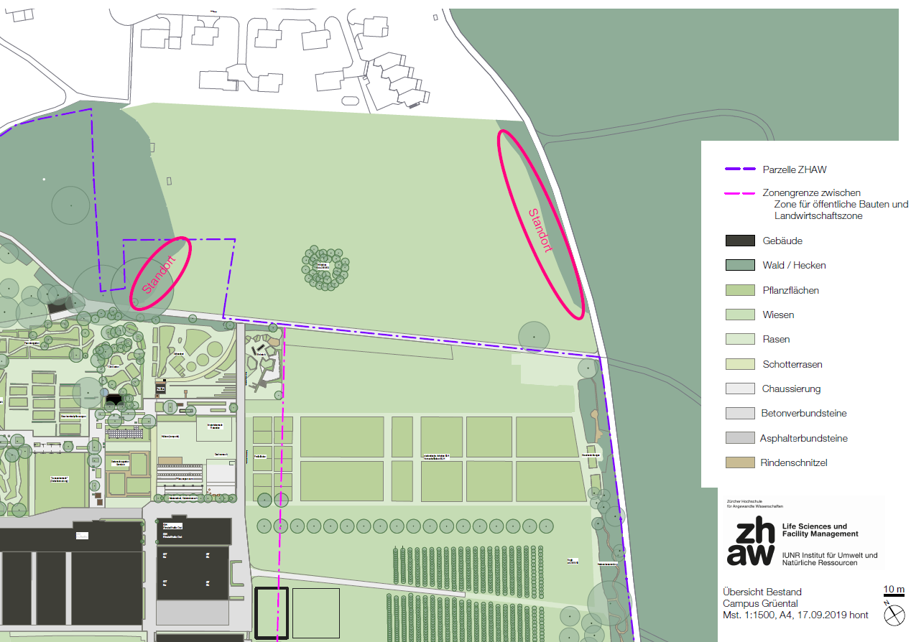
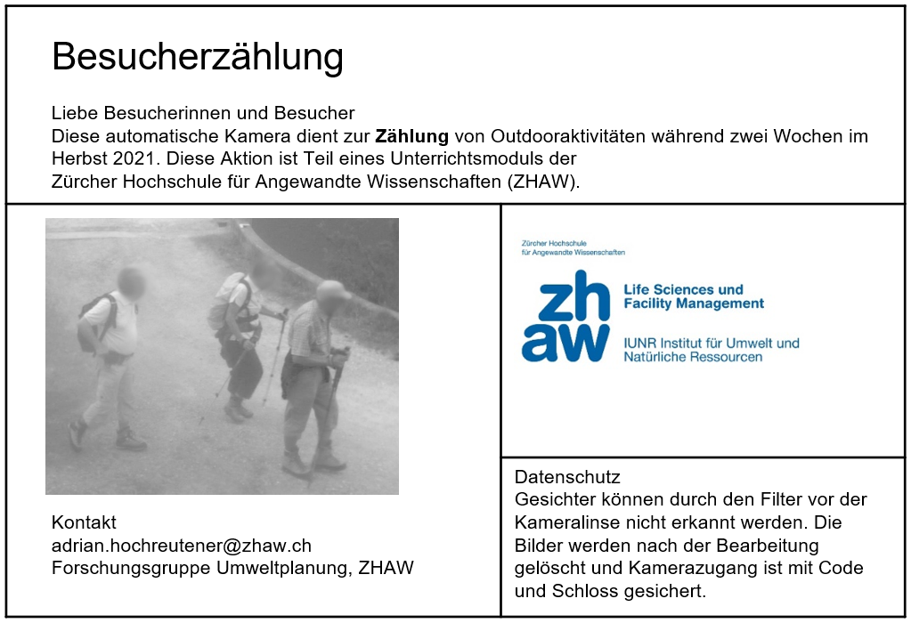
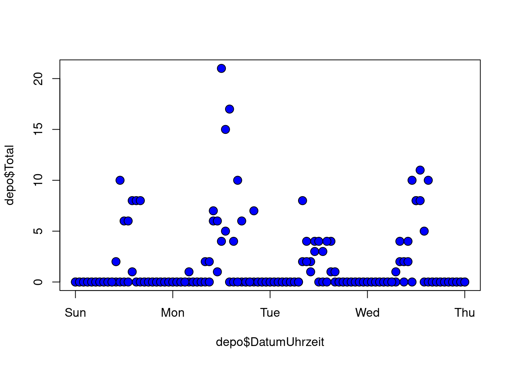
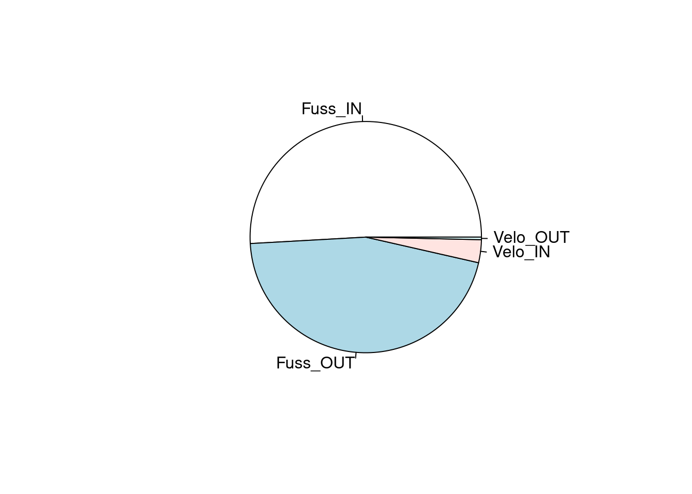

### Bibliothek laden
# zuerst muss sie installiert sein:
# install.packages("tidyverse")
library(tidyverse) # Arbeiten mit Datumsformaten
### Datensatz einlesen
# dabei speichere ich ihn gleich unter der Variable "depo" ab.
depo <- read.csv("datasets/fallstudie_s/Felderhebungen/Bsp_Data.csv", sep = ";")
### Datum und Uhrzeit
# das Datum und die Uhrzeit sind in einer Spalte. R liest das als "Buchstaben" ein. Wir definieren es als Datum:
depo$DatumUhrzeit <- as.POSIXct(depo$DatumUhrzeit, format = "%d.%m.%Y %H:%M")KW 40 - KW 42: Felderhebung
Einführung und Installation
Es gibt eine Vielzahl an möglichen Methoden zur Erfassung der Besuchszahlen. Automatische Zählgeräte bieten die Möglichkeit lange und durchgehende Zeitreihen zu erfassen. Inputs dazu, wie diese ausgewertet werden können, erhält ihr in dieser Aufgabe.
Ziele
Die Studierenden können das eingesetzte Zählgerät installieren und kennen die Vor- und Nachteile verschiedener Methoden.
Die Studierenden können die Daten auslesen und explorativ analysieren.
Grundlagen
Die Geräte werden innerhalb der unten eingezeichneten Elipsen platziert. Damit soll überprüft werden, wie stark frequentiert die Waldränder der ökologisch aufgewerteten Seeparzelle sind.

Datenschutz ist ein wichtiges Thema. Die Besuchenden werden über den Zweck der Kameras informiert, die Daten nach der Bearbeitung wieder gelöscht und nicht weitergegeben.

Auswertung
AUFGABE ab dem 17. 10. 2022
Nachdem die Kameras für zwei Wochen im Einsatz standen, sichten wir zusammen die Ergebnisse.
Da die Anzahl Passagen auf der Seeparzelle keine schöne Auswertung erlauben, arbeiten wir ab jetzt mit einem Datensatz aus dem WPZ. Die Vorteile für euch sind:
- ihr habt genügend Daten für die Auswertung mit R und
- die Daten sind im selben Format wir für die späteren Aufgaben.
Aufgabe 1: Vorarbeiten
Überlegt euch mögliche Darstellungsformen für die Anzahl Passagen und die beobachteten Aktivitäten an den untersuchten Standorten.
Skizziert eure Ideen mittels Stift und Papier.
Aufgabe 2: Darstellung in R
R bietet sehr viele Optionen zur Analyse und zur Darstellung der Daten. Nehmt bitte den bereitgestellten Datensatz zur Hand und visualisiert eure Ideen mit R.
Untenstehend sind einige Ideen zur Umsetzung.
### Kennzahlen
#zuerst schaue ich mir jeweils den Aufau und die Kennzahlen zum Datensaz an:
str(depo)
# hat es im Datensatz noch fehlende Werte?
sum(is.na(depo))
# wie viele Personen sind IN das Gebiet gegangen?
sum(depo$Fuss_IN)
# wie viele insgesamt?
# dafür erstellen wir zuerst eine neue Spalte mit der Totalen Anzahl pro Datum und Zeitstempel:
depo$Total = depo$Fuss_IN + depo$Fuss_OUT + depo$Velo_IN + depo$Velo_OUT
# und berechnen nachher die Summe dieser neuen Spalte
sum(depo$Total)# Darstellen der Anzahl Passagen pro Stunde und Tag
plot(x = depo$DatumUhrzeit, y = depo$Total,
pch = 21, # Form
cex = 1.5, # Grösse
bg="blue") # Füllung
# Darstellung der verschiedenen Nutzergruppen
slieces <- c(sum(depo$Fuss_IN), sum(depo$Fuss_OUT), sum(depo$Velo_IN), sum(depo$Velo_OUT))
lbls <- c("Fuss_IN", "Fuss_OUT", "Velo_IN", "Velo_OUT")
pie(slieces, labels = lbls)
Aufgabe 3: für Fortgeschrittene
Die Anzahl Passagen pro Zählstelle können nicht nur als statische Diagramme dargestellt werden. R ist auch ein GIS! Hier seht ihr, wie mit R interaktive Karten gestaltet werden können.
# zuerst berechnen wir mit der Bibliothek tidyverse das Total pro Standort
total_Standort <- depo |>
group_by(Standort, lon, lat) |>
summarise(Total = sum(Total))
# dann überführen wir den Datensatz in ein räumliches Format
# (Hinweis: dafür muss die Bibliothes "sf" installiert sein)
total_Standort <- sf::st_as_sf(total_Standort,
coords = c("lon", "lat"),
crs = 2056)
# Transformiere die CH1903 Koordinaten in WGS84
total_Standort <- sf::st_transform(total_Standort, crs = 4326)
# Plotte nun eine interaktive Karte
# install.packages("tmap")
library(tmap)
# setze den Modus auf Interaktiv
current.mode <- tmap_mode("view") # plotte
tm_basemap(server = c(Topo = "Esri.WorldTopoMap",
Ortho = "Esri.WorldImagery",
OSM = "OpenStreetMap.HOT"))+
tm_shape(total_Standort)+
tm_bubbles(size = "Total", border.col = "black", col = "red", scale = 5, alpha = 0.5)Interaktive Karte von zwei ausgewählten Zählstellen im Untersuchungsgebiet mit fiktiven Besuchszahlen.